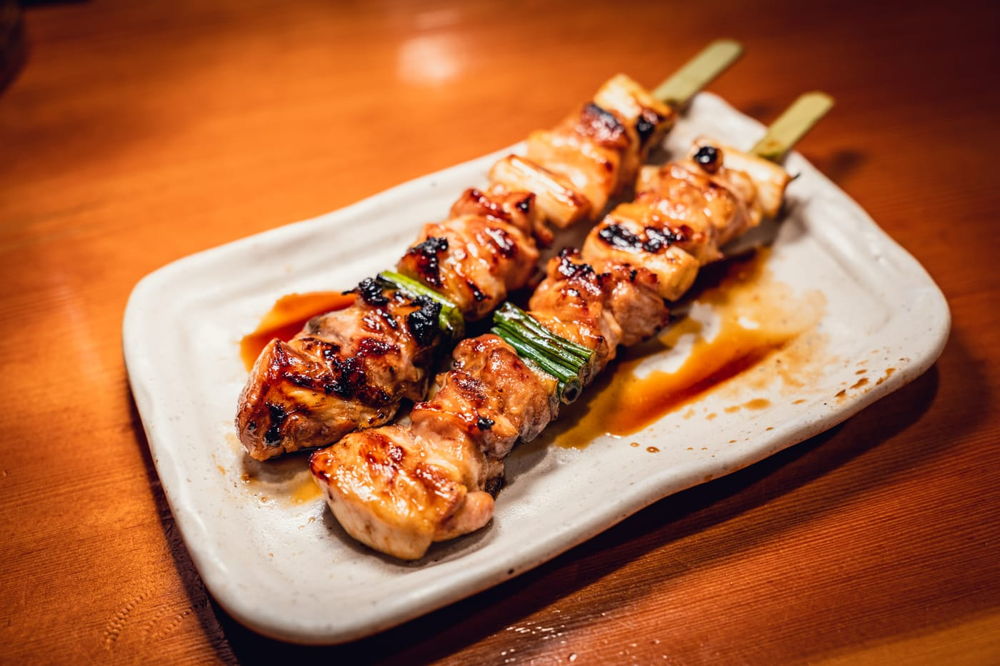
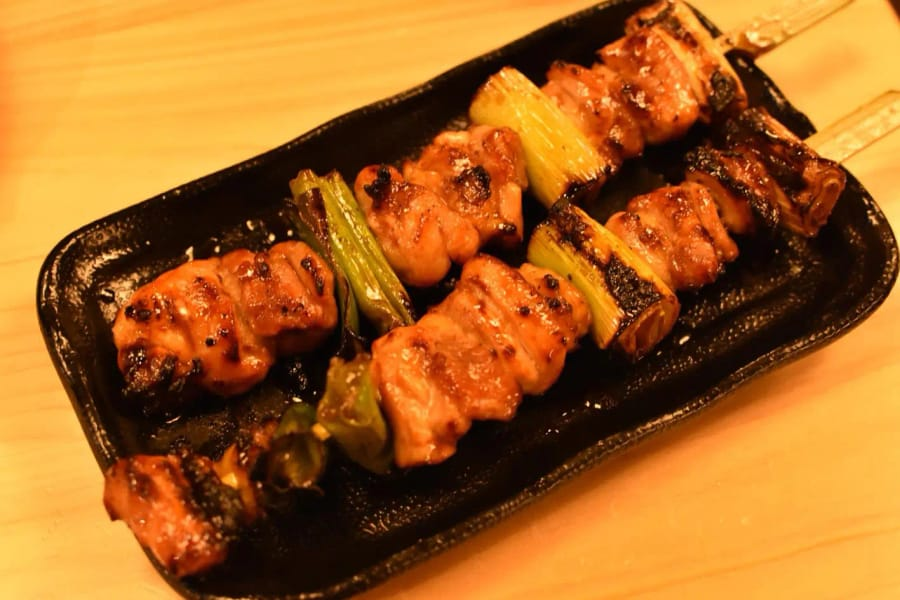
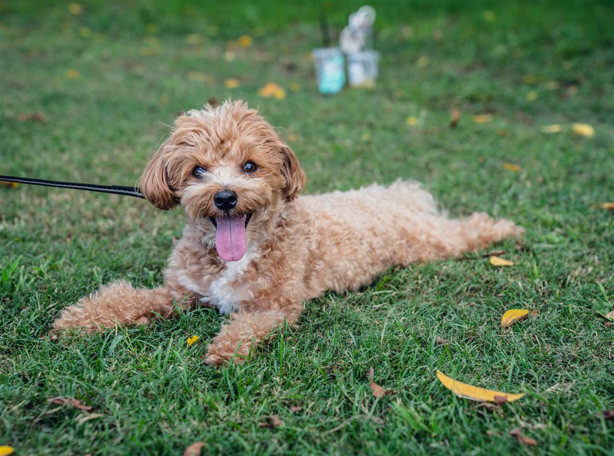

写真の見せ方
手元の写真を活かし、トリミング・並べ方・Before/Afterで実物の良さを引き出します。足りない場合は追加撮影も相談できます。写真がなくても、まず相談できます。
HP・Instagram・Googleマップ・写真の“見せ方”を直して、問い合わせにつなげます。HPがなくても大丈夫。まずは無料相談で、どこを直すと良くなりそうかと、費用のだいたいの目安をお返しします。
完成HPサンプルを見る →3業種・すべて架空サンプルです
— 無料相談は方向性とプラン目安まで。見るだけでも大丈夫です。（料金へ →）


つまみを左右に動かしてみてください。
表現サンプル（AFTER：自社撮影）／実在クライアント・実在店舗ではありません
※ 撮影は STANDARD / PREMIUM プランに含まれます（BASIC は撮影なし）
INDUSTRY SAMPLES
ペット・飲食・車関連の3業種で、実際に動く完成HPサンプルを用意しました。世界観が違っても、軸は「実物の良さを、写真と余白で伝える」こと。スマホでもPCでも、本物のHPと同じように動きます。
あなたの業種なら — 美容・サロン・教室・ペットは「ペット」型（安心と日々の発信）、飲食・宿・カフェは「飲食」型（品と予約導線）、車・建設・職人・工房は「車」型（技術と実物の迫力）が近いです。業種が違っても“見せ方の型”はそのまま移せます。

01 — PET SERVICEお預かりの一日を通い帳でお返しするサンプル。やわらかい色・丸ゴシック・写真の表情で「安心して預けたい」を作る方向。架空サンプルHPです。
完成HPを開く →
七席だけの季節のおまかせサンプル。明朝・暗背景・金茶で「品と余韻」を作る方向。日本酒と季節の小皿。架空サンプルHPです。
完成HPを開く →
一台のこだわりを相談につなげるサンプル。黒×赤・大型欧文・スクロールで姿を変える粒子演出。「え、こんなことできるの」を作る方向。架空サンプルHPです。
完成HPを開く →編集後記 — HONESTY NOTE
※ 3つとも架空サンプルです。実在クライアント・実在店舗・実在の販売車両ではありません。ナンバープレートはサンプル制作上、塗りつぶし処理しています。
※ MISERUは開業準備中で、お客様の実績はまだありません。だからこそ実在のお客様を一切装わず、架空と明記した3業種ぶんのサンプルを本気で作りました。仕事の質は、ここで確かめてください。このサイト自体も、MISERUの“見せ方”の実物です。
CHECK
実力の問題ではなく、“見え方”で問い合わせを逃していることがあります。あてはまる項目があれば、その1ページから一緒に整えられます。
— ひとつでも心当たりがあれば、まずは無料相談から。今あるものを送るだけで大丈夫です。（料金へ →）
WHAT WE DO
写真が小さい・スマホで問い合わせしにくい・古く見える——それだけで損をしていることがあります。いまあるサイトやSNSを活かして、効くところから整えます。
手元の写真を活かし、トリミング・並べ方・Before/Afterで実物の良さを引き出します。足りない場合は追加撮影も相談できます。写真がなくても、まず相談できます。
電話・LINE・予約・フォームを、親指の届く位置へ。来てくれた方を取りこぼさず、相談・予約まで自然につなげます。
ファーストビュー、実績ページ、文章の整理まで。「何屋で、何が強みか」がひと目で伝わる構成に整えます。
FOR
写真・実績・現場感・人柄が、そのまま信頼や売上につながる事業者に。
施工写真を、信頼につながる事例ページへ。
施工前後を、依頼したくなる実績に。
料理写真と予約導線を、迷わず伝わる形へ。
雰囲気・メニュー・予約まで、スマホで見やすく。
在庫・カスタムを、問い合わせにつながる見せ方へ。
空間と体験を、予約まで迷わない導線で。
作品や工程を、選ばれる理由として整理。
安心感と料金を、相談しやすい形に。
SHEET
具体的な整理は、初回見立てシートから。申し込んだ後に何が起きるかも、最初にはっきりさせます。
今のページで「もったいない」点を、具体的にお伝えします。
どこをどう変えると伝わるか、要点で整理。今ある写真で足りるか、撮ると伝わる写真は何かも確認します。
改善後の見せ方を、簡単なラフでお見せします。
制作・改善が必要な場合だけ、範囲と目安を。押し売りはしません。
紙面サムネ（実物見本の縮小・架空）
いきなり作り直すのではなく、初回見立てシートで1ページ分だけ、写真の見せ方・見出し・問い合わせ導線を整理して紙面にまとめます。無料相談は、方向性と合いそうなプラン目安まで。具体的な改善案・ラフは、この初回見立てシートから対応します。
¥9,800〜所要 約1週間／A4数枚
ご依頼に進んだ場合、¥9,800 は制作費から全額充当します。見立てだけで終えても大丈夫です。
※これは初回見立てシートの見本です。実在するクライアント事例ではありません。
PRICE
写真がある方も、ない方も大丈夫です。まずは無料相談で方向性を確認し、必要な範囲だけ選べるようにしています。
方向性・合うプラン・概算の目安をお返しします。具体的な改善案・文章案・写真選定はお返ししません。
¥0所要 2〜3営業日1ページ分の改善案をA4数枚に整理。具体的な改善案はここから対応します。ご依頼に進んだ場合、¥9,800 は制作費から全額充当します。
¥9,800〜所要 約1週間今あるHP・Instagram・写真を活かして整えます。撮影なし。向いている方：今ある素材を活かしたい
¥98,000〜 目安納期 2〜3週間〜現地撮影＋トップ＋必要な2〜4ページ（料金・アクセス・FAQ・問い合わせ等）。向いている方：写真ごと、ちゃんと整えたい
¥298,000〜 目安納期 4〜6週間〜撮影＋10ページ前後＋構成・文章の全面設計。向いている方：事業の顔になるHPが欲しい
¥498,000〜 目安納期 1.5〜2ヶ月〜Monitor — 先着3社
先着3社モニター枠｜掲載許可とご感想をいただける方に、STANDARD相当（通常 ¥298,000〜）を¥238,400〜（20%OFF）でご提供します。制作完了後、実績として Before / After を掲載させていただきます。
¥0・入力1分・しつこい営業はしません。
WHO
大きな制作会社ではありません。だからこそ、写真の選び方からスマホの導線、ことばの一つひとつまで、あなたの「いい仕事」が伝わるように手を動かします。
一眼レフでの撮影と、建設・現場系Webの制作経験。あなたの仕事を撮って、整えて、伝わる形にします。
FLOW
押し売りはしません。まずは改善点だけ見て、必要なときだけお手伝いします。
HP・Instagram・Googleマップ・写真など、何でも大丈夫です。
方向性と、合いそうなプラン・費用目安をお返しします。見るだけでもOK。
続ける場合だけ。1ページ分の具体的な改善案をA4数枚で。
納得いただいてから。小さな改善からでも。
毎月の縛りはありません。
FAQ
しません。まずは無料相談で、方向性と合いそうなプラン目安をお返しするだけです。具体的な改善案・ラフは初回見立てシート（¥9,800〜）から。続けるかどうかは、ご覧になってから決めていただけます。不要ならそのままで大丈夫です。
無料相談（方向性と合いそうなプラン目安まで）は無料です。具体的な改善案・写真選定・文章案・レイアウト案は、初回見立てシート（¥9,800〜）から対応しています。費用が発生する作業は、必ず範囲と金額をお見せして、ご承諾いただいてからです。
料金やお見積もりだけ先に見せられても、判断しづらいと思うからです。無料相談で方向性と合いそうなプラン目安をお伝えし、続けるかどうかをまず決めていただきます。具体的な整理（写真選定・文章・導線・ラフ）は、初回見立てシート（¥9,800〜）で1ページにまとめてお返しします。段階的に進めていただける入り口として用意しています。
大きく作り直すなら、専門の制作会社がしっかりしています。MISERUは“その手前”で、今のページの見せ方だけを整える役割です。無料相談では方向性と合いそうなプラン目安まで確認できます。具体的な整理は、初回見立てシート（¥9,800〜）でご判断いただけます。
AIツールは、安く早く“ページの形”を作るのが得意です。MISERUは、すでにある実物（写真・実績・現場）を、どう見せれば伝わるかを人が考えて整えます。作る前の「今の見え方を確かめたい」「実物の良さが伝わっていない」段階に向いています。
なりません。今のサイトを活かして、写真・文章・スマホ導線を整えるところから始めます。作り直しが必要な場合も、範囲と費用の目安を先にお見せしてから判断いただけます。
大丈夫です。むしろ決める前の方が向いています。初回見立てシート（¥9,800〜）で「整えるだけで十分か」「作り直した方がよいか」の判断材料を整理します。急いで決めていただく必要はありません。
無料相談では方向性と合いそうなプラン目安まで。初回見立てシート（¥9,800〜）からは、今のページで伝わりにくい箇所の指摘、写真・文章・導線の改善案、「こう見せる」簡単なラフ、必要な場合の範囲と費用の目安をお返しします（上の「初回見立てシートで整理するもの」をご覧ください）。
はい。多くの場合、今のサイトを活かして写真の見せ方やスマホ導線を整えるだけで十分です。いきなりの作り直しは勧めません。
お持ちの写真の選び方・並べ方・トリミングで印象は変わります。必要であれば一眼での撮影もご相談いただけます。
はい、必要な場合はHPに掲載するための写真撮影も対応できます。ただし、無料相談・初回見立てシート・BASIC（見せ方リペア）に撮影は含まれません。写真が足りない場合は、STANDARD（撮影込み・おまかせHP ¥298,000〜）、PREMIUM（撮影込み・しっかりHP ¥498,000〜）、または追加撮影（+¥120,000〜）をご提案します。まずは今ある写真で足りるかを確認します。
はい。写真が少ない場合でも相談できます。初回見立てシート（¥9,800〜）では、今ある素材で使えるものを整理し、足りない場合は「どんな写真を撮ると伝わりやすいか」までご提案します。
できます。スマホでの見やすさ・問い合わせ導線だけを整えるご依頼にも対応しています。
はい。LINE相談・予約・問い合わせフォームへの導線づくりも対応しています。
HPの改善や制作はオンラインで全国対応できます。撮影が必要な場合のみエリアをご相談ください。
もちろんです。実力はあるのにWebで伝わっていない、小さな事業者さまのために始めたサービスです。
はい、公式LINEで相談できます。こちらから友だち追加して、トーク画面でメッセージを送ってください。今のHPや1ページ分のスクショを送っていただければ、無料相談として方向性と合いそうなプラン目安をお返しします。具体的な改善案・写真選定・文章案・レイアウト案は、初回見立てシート（¥9,800〜）から対応しています。フォームやメールでのご相談も大丈夫です。
小規模事業者持続化補助金では、HP制作費を「ウェブサイト関連費」として補助対象にできます。ただし、補助金交付申請額の1/4（最大50万円）まで・ウェブサイト関連費単独では申請できない、という条件があります。申請されるのはお客様ご自身で、地域の商工会議所・商工会で相談できます。MISERUは見積書など、申請に必要な書類の発行に対応します。
ここに無い疑問は、そのまま聞いてください。無料で相談する →
CONTACT
HP・Instagram・Googleマップ・写真・メニュー表など、今あるものを教えていただければ、まずは無料でお返事します。しつこい営業はしません。
サイトURL・Instagram・写真やスクショを送るだけでOK。フォームが面倒な方は、LINEからどうぞ。
公式LINEで相談する →※ 別タブでLINEが開きます。友だち追加後、トーク画面でメッセージを送ってください。
直接のご連絡：megabranbran@gmail.com